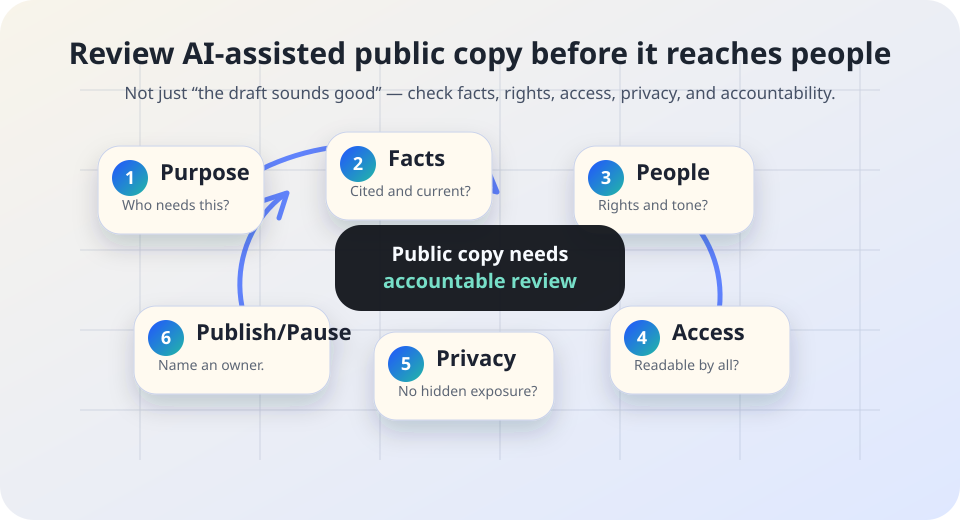

AI governance and public communication
AI communication review checklist.
A pre-publication check for AI-assisted notices, emails, web pages, translations, captions, letters, scripts, social posts, and public statements.
The short answer
AI can help draft, summarize, translate, or reformat public communication. It cannot replace accountable review. Before an AI-assisted message reaches people, someone should check purpose, facts, rights, accessibility, language access, privacy, tone, and ownership.
This is especially important when the message affects benefits, deadlines, eligibility, discipline, safety instructions, legal rights, health, school obligations, public services, or emergency response. A fluent draft can still be false, unclear, inaccessible, stigmatizing, privacy-invasive, or missing the human contact path people need.

Why this review matters
NIST’s AI Risk Management Framework emphasizes governance, context mapping, measurement, management, documentation, and accountable roles across AI use. OMB guidance for U.S. federal agencies requires risk-management practices for agency AI use, including public rights-impacting uses and governance. PlainLanguage.gov recommends writing so readers can find what they need, understand what they find, and use it to meet their needs. WCAG 2.2 and DOJ web-accessibility guidance point to accessible digital content and services. LEP.gov’s language-access planning materials describe meaningful access for people with limited English proficiency.
Those sources do not prescribe one AI communication checklist. The practical lesson is narrower: when a public message is partly made with AI, review must still be accountable, understandable, accessible, source-backed, and safe for the people who receive it.
1. Minimum checks before publication
| Check | Question to answer | Evidence to keep |
|---|---|---|
| Purpose | Who is the message for, what must they do next, and what harm could confusion cause? | Audience, channel, owner, deadline, and review reason. |
| Facts and sources | Are dates, names, numbers, eligibility rules, citations, quotes, links, and instructions verified against authoritative sources? | Source links, reviewer initials or role, and date checked. |
| Rights and consequences | Could the message affect access to services, discipline, benefits, immigration, employment, health, housing, education, safety, or legal rights? | Escalation note showing legal, policy, program, or supervisor review where needed. |
| Accessibility | Is the content readable by people using screen readers, captions, keyboard navigation, sufficient contrast, clear headings, descriptive links, and accessible documents? | Accessibility checklist or content review note. |
| Language access | Does the message need translated versions, interpreter contact, plain-language rewrite, or review by a qualified language-access process? | Language-access decision and reviewer/source. |
| Privacy and records | Did the AI draft introduce, expose, infer, or preserve personal information that should not be in public copy or retained prompts? | Data-minimization and retention decision. |
| Disclosure and contact | Do people need to know AI helped prepare the message, and is there a human contact or correction path? | Disclosure decision and contact route. |
2. Treat these messages as high-risk
Deadlines and eligibility
Application windows, appeal deadlines, document requirements, benefit notices, fee waivers, school enrollment, or public-service instructions.
Rights and obligations
Messages about discipline, compliance, enforcement, consent, refusal, review, appeal, records, deletion, or complaint paths.
Health, safety, or emergencies
Any message people may use to decide whether to seek help, evacuate, report harm, follow safety instructions, or rely on a service.
Translations and captions
AI-assisted translations, subtitles, summaries, alt text, or captions that might change meaning or block meaningful access.
Public trust moments
Apologies, incident notices, correction statements, policy explanations, and responses to community concerns.
Personal or sensitive context
Drafts involving minors, health, disability, immigration, finances, education records, employment, benefits, complaints, or protected classes.
3. A simple review workflow
- Label the draft. Mark it as AI-assisted so reviewers do not mistake polish for verification.
- Attach source material. Include the policy, program page, law, meeting note, data source, or approved message the draft is based on.
- Review facts before style. Fix dates, names, links, numbers, conditions, exceptions, and contact paths before polishing wording.
- Check affected people. Ask who could misunderstand, be excluded, be stigmatized, miss a deadline, or lose an appeal path.
- Check access and privacy. Review accessibility, language access, document format, captions, alt text, and unnecessary personal data.
- Name the owner. Publish only when a role can answer questions, correct the message, and preserve review evidence.
4. Starter sign-off log
| Date | Message / channel | AI use | Checks completed | Stop rules considered | Owner |
|---|---|---|---|---|---|
| YYYY-MM-DD | Notice, email, web page, caption, translation, script, or social post | Drafted; summarized; translated; reformatted; none | Facts; rights; accessibility; language access; privacy; contact path | High-risk? legal/policy review? source gap? access gap? | Role or team |
| YYYY-MM-DD | Service deadline reminder | AI-assisted plain-language rewrite | Program source checked; deadline verified; human contact added | Paused if eligibility terms are uncertain | Program owner |
Keep the log lightweight. Do not store sensitive prompt text or personal details unless a records policy requires it and the storage location is approved.
5. Stop rules
- Pause: The message gives a deadline, requirement, or consequence that no reviewer has checked against the authoritative source.
- Pause: The AI draft invents a source, quote, phone number, web address, program rule, legal standard, or office name.
- Pause: The message affects rights, eligibility, discipline, benefits, safety, or access and no accountable owner has reviewed it.
- Pause: Translation, captions, alt text, or simplified wording could change meaning and no qualified review path exists.
- Pause: The draft includes personal, sensitive, stigmatizing, or unnecessary details that should not be public.
Starter review language
Review note: “This message used AI for [drafting/summarizing/translating/reformatting]. [Role] checked facts against [source], reviewed accessibility and language-access needs, removed unnecessary personal data, confirmed the contact/correction path, and approved publication on [date].”
Pause note: “Do not publish yet. The draft needs [source verification/accessibility review/language review/legal or policy review/privacy review/owner approval] because [risk].”
Disclosure option: “AI helped prepare an early draft. A responsible reviewer checked the final message before publication.” Use only when it is true and when disclosure is helpful or required by policy.
Related Field Guide pages
Sources and further reading
- NIST — AI Risk Management Framework.
- NIST — Artificial Intelligence Risk Management Framework (AI RMF 1.0).
- White House Office of Management and Budget — M-24-10: Advancing Governance, Innovation, and Risk Management for Agency Use of Artificial Intelligence.
- PlainLanguage.gov — Federal plain language guidelines.
- W3C — Web Content Accessibility Guidelines (WCAG) 2.2.
- U.S. Department of Justice — Guidance on Web Accessibility and the ADA.
- LEP.gov — Language access planning.